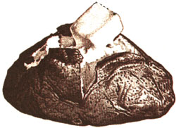
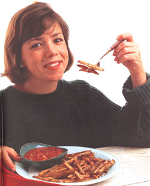

Issue # 147 - December/January 1995
NATURAL KITCHEN
MOTHER'S KITCHEN
A New Look at an old standbyWhen we were stuck on a farm in the north country during a harsh winter, our choices for dinner on occasion were potatoes, potatoes, and more potatoes. Since our homegrown root vegetables kept most of the winter in the root cellar, they were a dependable staple to count on when we were snowed in with the nearest town 5 miles away. Sometimes on a winter morning we'd visit our relatives' farm, where, if we arrived early enough, we could catch the delicious smell of my brother-in-law's famous fried potatoes cooking in a cast-iron skillet over a wood burning stove. No need for fried eggs and toast, a plate of potatoes was all I needed. Let's face it, those plain of spuds are good, cheap, and filling.
Humble-yes, but delicious and nutritious. A plump baked potato contains complex carbohydrates, 5 grams of protein, 1 gram of fat (without added butter), vitamin C, and fiber (if you eat the skin). Potatoes need not be a high sodium, high fat food if you prepare them yourself. It all depends on preparation and toppings.
A BAD RAP Potatoes need not be a high-fat, high-sodium food if you just prepare them yourself.
New potatoes Any potatoes that are just harvested have a high moisture and sugar content so they have a sweeter flavor if they're cooked within a few weeks' time.
Long Russets: Hard brown skin and starchy, fluffy interior. The leading variety grown is the Russet Burbank (or the Idaho baking potato). Good for baked, French fried, or mashed potatoes, depending upon the type of russet you use.
Long Whites: Firm, thin-skinned, and waxy, they hold together well and are best for boiling, soups, salads, and casseroles.
Round Reds: Smooth, firm-skinned and waxy, they're excellent for steaming or boiling. The small Red La Soda or Red Pontiac are most commonly sold "new."
Round Whites: They can be used like Long Whites or Round Reds, but they're smaller in size and are either oval or round. The smaller round reds or whites can be steamed and used in salads whole.
Yukon Gold: They are the size of along white with a gold-colored flesh and sweeter flavor.
Purple potatoes: Purple skin with a bluish flesh, tasting like a Long White.
Yellow Finnish: Color, texture, and taste of Yukon Gold but usually smaller.
Potatoes are always available, but they're not always fresh. The flavor dwindles with storage as the potatoes' natural sugars turn to starch. Choose firm, un sprouted potatoes from a bulk display, or in a large net bag, as potatoes in plastic bags tend to spoil sooner. Sprouts and green spots should be avoided since they may contain solanine, a naturally occurring toxin.
Store at 45-50°F in a dark, dry place in a paper bag or a towel-covered bushel basket. Never store apples or onions and potatoes together since the gases given off by the onions will hasten spoilage. Don't store potatoes in the refrigerator (lower than 45°F) because the lower temperature alters the starches and flavor. If you buy dirt-covered potatoes from a farm stand, don't wash them before storing because the dirt prolongs the potatoes' freshness.
Leave the skin on whenever possible, but cut away any and all sprouts or green patches. Once the potatoes are cut or grated and exposed to air, they darken immediately so store them in a bowl of cold water until you need them.
Baking: Pierce a russet , potato in a few places with a fork. Rub on some olive oil and place on the shelf in a preheated 400°F oven for 45-60 minutes. Test for doneness by squeezing-it should give slightly.
Boiling or steaming: Using a vegetable steamer is preferred since less vitamins are lost. Boil water first, drop in potatoes, cover, and simmer for 10-30 minutes, depending on the potatoes. Small new potatoes will cook in 10-15 minutes.
Microwaving: Pierce the potatoes in several places with a fork so they won't explode. Arrange in a circle with the thick ends of the potatoes facing the center. Rotate halfway through cooking. Depending on size and the number of potatoes, it will take about 5-10 minutes. (Don't cook more than four at a time.) Remove and let stand for 5 minutes before serving. This isn't my favorite method, since the ends of the potatoes will sometimes shrivel and the skin isn't crisp. Baked potatoes can be partially cooked in the microwave and then baked in the oven to save time. (See Spinach-Stuffed Potatoes.)
Freezing: Potatoes only freeze well in stews, soups, or mashed potatoes. They can be frozen in plastic containers.
1 tablespoon butter or oil
1/2 cup yellow onions - peeled and coarsely chopped
1 large clove garlic - peeled and coarselychopped
1 medium leek or 2 small leeks, white part only - coarsely chopped
(save green part)
1 15-ounce can unsalted chicken broth
2 cups water
1/4 teaspoon cayenne pepper
1/4 teaspoon freshly grated nutmeg
1/2 teaspoon salt
freshly ground pepper
1 pound russet potatoes (about 5 medium potatoes) - peeled and cut into 1-inch slices
2 cups low fat milk
4 ounces "light" cream cheese
1/4 cup parsley - chopped, or fresh chives - minced (optional)
In a large, covered soup pot heat the oil and add the onion and leeks. Sauce until they start to brown. Stir in the garlic for a minute or so. Pour in the chicken broth, water, spices, and potatoes. Cover and simmer until the potatoes are soft-almost 25 minutes. Puree in batches in the blender, gradually adding the milk. When the soup is smooth, blend in the cream cheese. If the soup is too thick, add more water. Check the seasonings. Return soup to pot and reheat or refrigerate until needed. Top the hot soup with freshly chopped parsley or chives.
1 1/2 teaspoon chili powder
1 teaspoon dried thyme
2 teaspoons dried oregano
1/2 teaspoon paprika
1/2 teaspoon saltfreshly ground pepper
6 medium-sized brown, skinned potatoes-cut into 1/4-inch matchsticks (about 4 cups)
1 large rutabaga-cut into 1/4 - inch matchsticks (about 3 cups) - remove the skin first if the rutabaga is covered with wax or the skin is dry and tough
2 large cloves garlic - minced (or 1/2 - teaspoon garlic powder)
1 tablespoon olive oil
Salsa (optional)
Preheat oven to 450°F. Line a large cookie sheet or jelly roll pan with aluminum foil. Scrub the potatoes and rutabaga. Make sure to cut the fries the same width or else some fries will be underdone. In a large bowl stir together the spices. Toss together with the potatoes, rutabaga, garlic, and oil. Arrange on the cookie sheet in thin layers. Bake 10 minutes, remove sheet from the oven and flip them over with a spatula. Return to oven, bake 10 more minutes, and flip again. Bake 10 more minutes and check for doneness. Total baking time: 30-35 minutes. Remove from oven and let cool a few minutes. Serve plain or dipped in salsa.
Healthy Mashed Potatoes
Use high starch russets or Yukon Gold. If the skins are thin, leave them on and boil or steam the potatoes in a large, covered potjust until soft. Drain the water into a measuring cup. Mash the potatoes with a potato masher (not a ricer). Stir about 1/4-cup heated chicken broth and a few tablespoons of buttermilk. If the potatoes are too thick, add some potato water. Add salt, freshly ground pepper to taste. Stir in 3-4 cloves sauteed, minced garlic cloves. You might want to try adding finely chopped fresh spinach and chopped sauteed mushrooms.
This is my alternative to twice-baked potatoes.
4 large Idaho baking potatoes (about 3 pounds)
olive oil
1/2 cup onion-minced
2 cups fresh spinach leaves-washed, dried, and chopped into thin strips
1/8 teaspoon nutmeg
1/4 teaspoon salt
freshly ground pepper
1/2 cup low fat buttermilk
1/4 cup freshly grated Parmesan or Romano
cayenne pepper
Preheat oven to 375°F. Pierce each potato in two or three places. Rub potatoes lightly with olive oil. In a microwave oven arrange the potatoes in a circle with the thickest parts to the outside, and cook on high power for 10 minutes, turning them every 3 minutes, until they begin to "whistle." Bake in oven for 15-20 minutes until they can be easily pierced with a fork. (The microwave method saves time, but you can bake the potatoes in a 375°F oven for 45-60 minutes instead.) While the potatoes are baking, saute the onion in a few drops of olive oil until soft. Add the spinach and saute about 30 seconds until soft. Remove from heat and mix in a bowl with the salt, pepper, and buttermilk. (If using frozen, merely stir into onions and remove from heat.) When the potatoes are done, cut in half lengthwise (use pot holders), and scoop out the flesh with a spoon. Add to the spinach/buttermilk mixture and mash together with a fork. Arrange the skins on a cookie sheet and spoon the mixture into the skins. Sprinkle with the grated cheese and cayenne pepper. Return to 375°F oven for about 20 minutes.
This is an easy salad to serve at room temperature with bratwurst or burgers.
6 medium red or white, skinned potatoes - halved (about 1 pound)
2 medium sweet potatoes - cut into thirds
1 small red pepper - cut into thin strips, then strips cut in half again
1 small red onion - peeled, quartered, and cut into thin slices
1/4 cup parsley (curly style) - minced
Vinaigrette
I tablespoon apple cider vinegar
1 tablespoon apple cider
I tablespoon canola (or other mild) oil
2 tablespoons brown sugar
I tablespoon Dijon mustard
1 teaspoon tamari soy sauce teaspoon cayenne pepper
salt to taste
Salsa-homemade or bottled Low-fat or nonfat yogurt Barbecue sauce and grilled vegetables Chopped fresh herbs, chives, and green onions, hot peppers Assorted sautéed mushrooms and a little grated Parmesan cheese Tahini (sesame paste) mixed with yogurt and minced garlic (top with chopped herbs) Chutney- tomato/apple or any other clean, tangy chutney
In a large, covered kettle place a vegetable steamer and 1 inch of water. Put in the red potatoes, cover, and simmer for 10 minutes. Meanwhile whisk the dressing. Add the sweet potatoes and simmer for at least 20 more minutes. Stick a fork in the potatoes. Both kinds of potatoes should be tender but not mushy. Using tongs or slotted spoon, remove any potatoes that are done. When all are done, place them in a bowl and let them cool at room temperature or in the refrigerator. When they've cooled, peel the skin off the sweet potatoes and cut off the ends. Cut all the potato pieces in half and then into 1/2-inch slices. Put in a bowl with the red pepper, onion, and parsley. Pour the dressing over the potatoes and toss gently so the sweet potatoes don't disintegrate. This salad will keep for 2 days in the refrigerator. Briefly toss again before serving.
Here's one way to use up those cold mashed potatoes.
1/2, cup cold, plain mashed potatoes (no skins)
1/2 cup low fat buttermilk
2 eggs
1/2 cup canola oil (or any mild oil) cup honey
2 tablespoons sugar
1/3 cup lower fat cocoa or carob powder
1/2 teaspoon cinnamon
1 teaspoon vanilla
1 1/2 cups sifted whole-wheat pastry flour
1/2 teaspoon baking soda
1/2 teaspoon baking powder
confectioners'sugar (optional)
Preheat oven to 350°F. Lightly oil the bottom of a 9-inch cake pan. Using an electric mixer, beat the mashed potatoes until the lumps are gone, adding some of the buttermilk if necessary. Beat well. Slowly add the flour, baking soda, baking powder, and beat until just mixed. Pour into the cake pan and bake for 25-30 minutes, just until a toothpick comes out clean. Beware of overbaking. Let cool on a rack before serving. Dust the top with confectioner's sugar if desired.
|
 |
 |
|